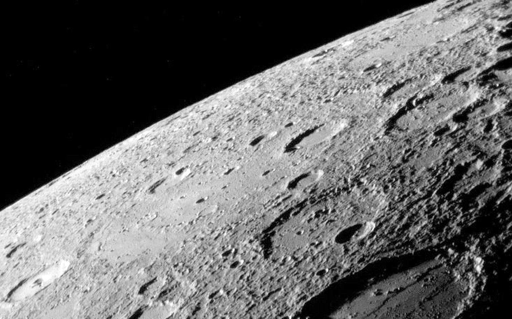
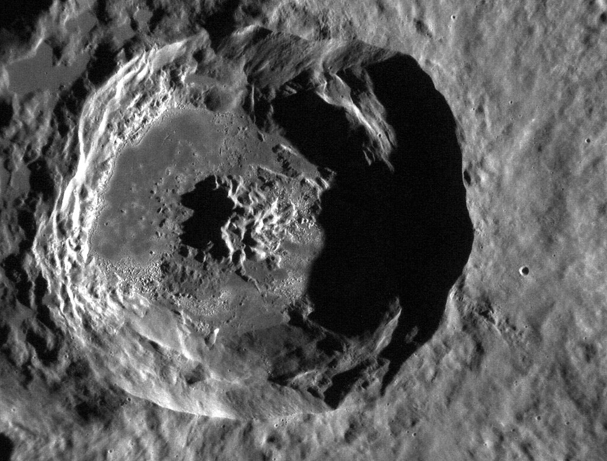
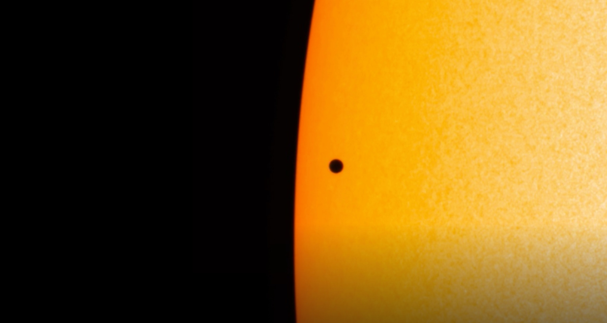

• Type : Planète tellurique (rocheuse)
• Diamètre : 4 879 km (environ 38% de celui de la Terre)
• Distance du Soleil : 57,9 millions de km
• Durée d'un jour : 58,6 jours terrestres
• Durée d'une année : 88 jours terrestres
• Nombre de satellites : 0
• Température : -173°C à 427°C (extrêmes de température les plus importants du système solaire)
• Atmosphère : Quasi inexistante, traces d'hélium, d'hydrogène, d'oxygène et de sodium
Mercure est la planète la plus proche du Soleil et la plus petite du système solaire. Son nom vient du messager des dieux dans la mythologie romaine, choisi en raison de sa vitesse de déplacement rapide dans le ciel. Mercure est une planète rocheuse, similaire à la Terre mais beaucoup plus petite et sans atmosphère significative. En raison de sa proximité avec le Soleil, Mercure est difficile à observer depuis la Terre. Elle n'est visible qu'à l'aube ou au crépuscule, jamais au milieu de la nuit. Cette difficulté d'observation explique pourquoi nous en savons relativement peu sur cette planète par rapport à d'autres corps du système solaire.
Mercure est un monde d'extrêmes. Sans atmosphère pour réguler sa température, la face exposée au Soleil peut atteindre 427°C, tandis que la face plongée dans l'obscurité peut descendre jusqu'à -173°C. Cette amplitude thermique de 600°C est la plus importante du système solaire.Une autre particularité de Mercure est sa rotation. Elle tourne très lentement sur elle-même : un jour mercurien équivaut à 58,6 jours terrestres. Combiné à sa révolution rapide autour du Soleil (88 jours), cela crée un phénomène étrange : sur Mercure, une journée solaire (du lever au coucher du Soleil) dure environ 176 jours terrestres.
L'exploration de Mercure a été limitée en raison des défis techniques que pose sa proximité avec le Soleil. Seules deux missions spatiales ont étudié cette planète de près: Mariner 10, lancée en 1973, a été la première sonde à survoler Mercure en 1974-1975, cartographiant environ 45% de sa surface. Il a fallu attendre plus de 30 ans pour qu'une autre mission, MESSENGER (MErcury Surface, Space ENvironment, GEochemistry, and Ranging), lancée en 2004, n'entre en orbite autour de Mercure en 2011. MESSENGER a cartographié l'intégralité de la surface et fourni des données précieuses sur la composition et la structure de la planète jusqu'à la fin de sa mission en 2015. Actuellement, la mission BepiColombo, lancée en 2018 par l'Agence spatiale européenne et l'Agence spatiale japonaise, est en route vers Mercure et devrait commencer ses observations en 2025.
La surface de Mercure est fortement cratérisée, similaire à celle de la Lune. Elle présente également de vastes plaines lisses, probablement formées par d'anciennes coulées de lave. Une caractéristique remarquable est le bassin Caloris, un immense cratère d'impact de 1 550 km de diamètre, l'un des plus grands du système solaire. Contrairement aux attentes, Mercure possède un champ magnétique, bien que beaucoup plus faible que celui de la Terre. Ce champ magnétique suggère que la planète a un noyau métallique partiellement liquide, malgré sa petite taille.

Surface cratérisée de Mercure photographiée par la sonde MESSENGER

Le bassin Caloris, un immense cratère d'impact de 1 550 km de diamètre

Transit de Mercure devant le Soleil, un phénomène astronomique rare
Chez Cosmos Explorer, nous proposons plusieurs façons de découvrir et d'explorer la planète Mercure :
• Observation des transits : Lors des rares transits de Mercure devant le Soleil, nous organisons des sessions d'observation spéciales avec équipement adapté.
• Exploration virtuelle : Notre simulateur de réalité virtuelle vous permet de vous poser sur la surface de Mercure et d'explorer ses cratères et plaines comme si vous y étiez.
• Conférences spécialisées : Assistez à nos présentations sur les dernières découvertes concernant Mercure et les défis de son exploration.
• Exposition permanente : Découvrez notre maquette détaillée de Mercure et les échantillons de météorites similaires à sa composition.
Pour plus d'informations sur nos programmes d'exploration de Mercure, consultez notre page d'exploration ou contactez-nous.